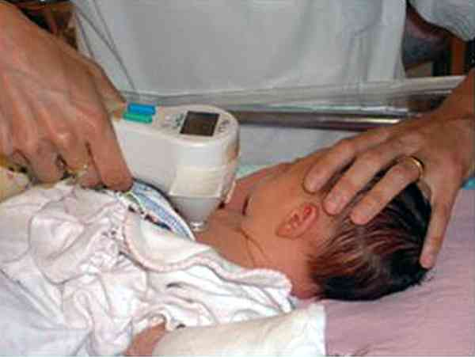
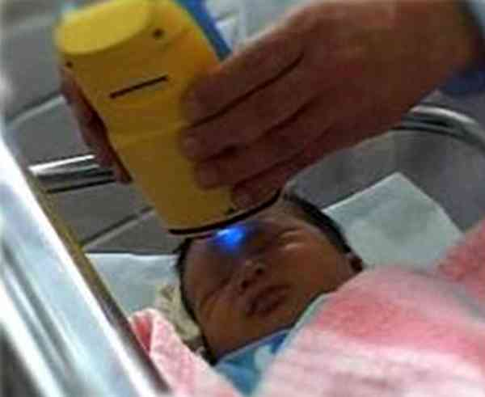
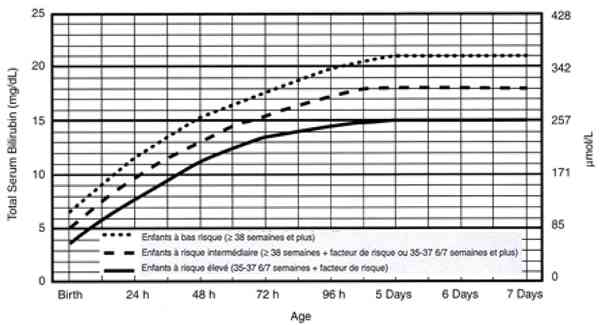
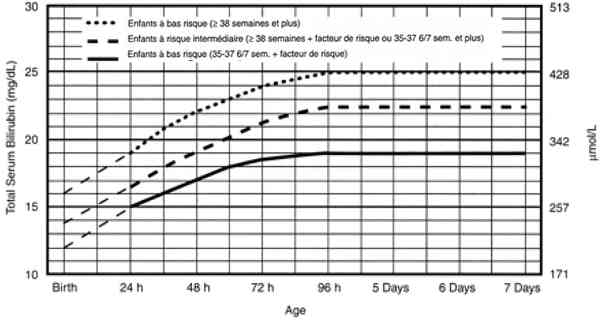
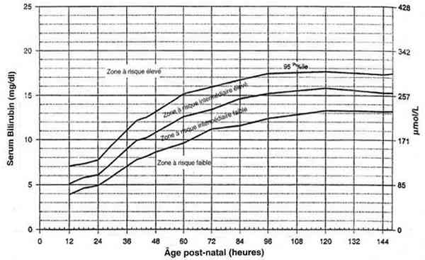
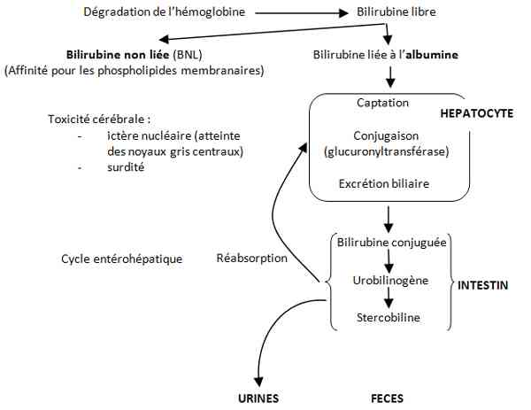
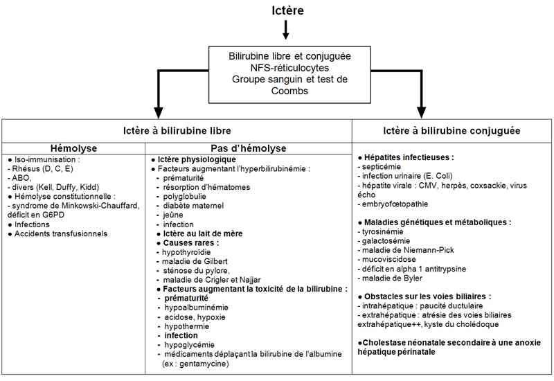

Bienvenue Sur Medical Education
Ictère néonatal
EnfantSpécialité : pediatrie / symptômes /
Points importants
-
Fréquent : 30 à 40 % des nouveau-nés à terme et la quasi-totalité des prématurés
-
Première cause de consultation dans les 15 premiers jours de vie
-
Dépistage clinique : utilisation des bilirubinomètres transcutanés
-
Le plus fréquent ictère à bilirubine libre
-
Deux causes fréquentes bénignes : physiologique et au lait de mère
-
Deux urgences diagnostiques : infection maternofoetale et hémolyse
-
Un risque : ictère nucléaire (encéphalopathie hypertonique, surdité)
-
Plus rarement ictère à bilirubine conjuguée : toujours pathologique : infection et malformation (atrésie des voies biliaires)
Présentation clinique / CIMU
SIGNES FONCTIONNELS
-
Hypotonie, apathie, léthargie
-
Mauvaise prise de poids
-
Fatigue aux tétés, vomissements
-
Fièvre ou hypothermie, urines foncées ou selles décolorées (blanc/gris mastic, jaune pâle ou beige)
CONTEXTE
Présentation clinique / CIMU
SIGNES FONCTIONNELS
- Hypotonie, apathie, léthargie
- Mauvaise prise de poids
- Fatigue aux tétés, vomissements
- Fièvre ou hypothermie, urines foncées ou selles décolorées (blanc/gris mastic, jaune pâle ou beige)
CONTEXTE
Terrain
- Age gestationnel < 38 SA
- Antécédents familiaux d'ictère
- Allaitement maternel
- Origine géographique (Afrique, pourtour méditerranéen, Asie, Antilles pour déficit en G6PD)
- Situation de risque d'allo-immunisation ou d'incompatibilité ABO
Facteurs de risque
- Traumatisme obstétrical
- Infection materno-fœtale
- Anoxie périnatale
- Sortie précoce avant 75h de vie
Circonstances de survenue
- Ictère pathologique à suspecter si apparition précoce (avant 24 heures de vie), prolongée (après J10), hépato-splénomégalie, anémie, selles décolorées
- Ictère 2e jour de vie jusqu'au 10e jour de vie peu intense : ictère physiologique (diagnostic d'élimination)
- Ictère 5e, 6e jour jusqu'à la fin d'allaitement et peu intense : ictère au lait de mère (diagnostic d'élimination)
EXAMEN CLINIQUE
- Apprécie l'intensité de l'ictère par pression du doigt sur la peau en présence d'une bonne lumière (si possible du jour). Coloration jaune de la peau et des conjonctives dès que le taux de bilirubine plasmatique > 60 µmol/L
- Peau noire ou asiatique : conjonctives +++
- Couleur selles et urines
- Recherche une pâleur associée
- Recherche une hépato-splénomégalie, des ecchymoses, céphalhématome, bosse sérosanguine ou tout autre symptôme orientant vers une étiologie particulière
EXAMENS PARACLINIQUES SIMPLES
Température, poids
Mesure transcutanée de la bilirubine
- Bilirubinomètres transcutanés (BTC) : photomètres : 2 mesures au niveau du front et 2 mesures au niveau du sternum, prendre la valeur la plus haute
 _588 Photo Bilirubinométrie transcutanée
 _589 Photo Bilirubinomètre Bilimed
- Dépistage et évolution (courbe individuelle), mesure non fiable au cours de la photothérapie (nécessite 12h d'intervalle)
- Si résultats dans les zones à risques : contrôle par prélèvement sanguin
- En cas de sortie ultra précoce à moins de 24h de vie, prévoir mesure de BTC systématique lors de la consultation pour Guthrie et dépistage d'hypothyroïdie
CIMU
-
Tri 3 ou 4
Signes paracliniques
BIOLOGIQUES
-
Devant un ictère simple et modéré du nouveau-né à terme : BTC
Examens de base si ictère précoce, intense, prolongé ou nouveau-né à risque
- Bilirubine totale et conjuguée
- Groupe sanguin, Rhésus, test de Coombs direct (+ Groupe de la mère)
- NFS + réticulocytes
- Ionogramme sanguin, albuminémie, glycémie, albuminémie, calcémie
- Bilan infectieux : CRP, hémoculture, ECBU
Examens de seconde intention
- Bilirubine non liée (BNL) ou bilirubine intra érythrocytaire (BIE)
-
Bilirubine totale, BNL et BIE sont à interpréter en fonction du terrain, du nombre d'heures de vie, du contexte clinique, de l'étiologie présumée ou confirmée :
-
critères de gravité :
- BNL > 1 mmol/L chez le nouveau-né à terme et > 0,8 mmol/L chez le prématuré
- BIE > 15 mg/L de globules rouges
- BNL et BIE sont techniquées dans les centres d'hémobiologie périnatale
-
critères de gravité :
- Si ictère à bilirubine conjuguée : bilan hépatique + hémostase + échographie abdominale (recherche d'atrésie des voies biliaires)
- Echographie transfontanellaire (recherche saignement : prématuré, traumatisme obstétrical)
Explorations spécialisées
- Dosage de G6PD ± pyruvate-kinase
- Résistance globulaire ou ektacytométrie
- Spot test de galactosémie
- Bilan thyroïdien sans attendre le résultat du prélèvement systématique
- Trypsine immunoréactive
- Phénotype de l'alpha 1 antitrypsine
- Biopsie hépatique
Diagnostic étiologique
LE PLUS SOUVENT ICTERE A BILIRUBINE LIBRE
Etiologies fréquentes
-
Ictère physiologique bénin :
- début 2e et 3e jour de vie, maximal au 4-5e jour et régression avant 10e jour
- Ne dépasse pas 250 µmol/L
-
Ictère au lait de mère :
- début 5e jour, en général prolongé, toujours bénin, lié à une lipoprotéine lipase inhibant la glucuro-conjugaison
- bon examen clinique, bonne prise de poids
- ne dépasse pas 350 µmol/L
- test diagnostic : régression de l'ictère 3 jours après le sevrage ou après chauffage du lait à 60°C
- ne contre-indique pas l'allaitement
Urgences diagnostiques
-
Infections materno-fœtales : ictère précoce
- fièvre inconstante ou hypothermie
- mauvaise prise de poids
- arguments anamnestiques (rupture de la poche des eaux > 12h, liquide teinté, tachycardie fœtale, fièvre maternelle, portage strepto B, récupération des prélèvements à la naissance : liquide gastrique)
- plus souvent tableau fruste ictère à bilirubine libre ou mixte : infection urinaire néonatale à E.Coli
-
Hémolyse : ictère précoce et/ou intense, parfois tardif ± signes d'anémie
- les plus sévères : incompatibilités Rhésus et apparentés (en diminution depuis la prévention de l'allo-immunisation D)
- plus fréquentes, parfois sévères et très précoces (avant 24h) : les incompatibilités ABO mère de groupe O et enfant plus souvent de groupe A, test de Coombs +, RAI anti A ou anti B chez l'enfant
-
anomalies enzymatiques du globule rouge :
- en particulier le déficit en G6PD (Afrique, pourtour méditerranéen, Asie), hémolyse entre 3e et 6e jour donc après sortie de maternité ; ne pas oublier le dépistage familial => liste des médicaments et aliments à proscrire
- mais aussi déficit en pyruvate-kinase, anomalies membranaires (maladie de Minkowski-Chauffard avec ses variantes diagnostiques à l'ektacytométrie)
-
Ictère avec facteur augmentant l'hyperbilirubinémie :
- prématurité
- retard de croissance intra-utérin
- nouveau-né de mère diabétique
- polyglobulie
- anoxie périnatale avec retard à l'alimentation
- résorption d'hématomes (cutané, bosse sérosanguine, céphalhématome, attention à l'anémie), plus rarement hémorragie profonde survenue en pré ou perpartum, saignement intracrânien
- nécessite surveillance et référence aux courbes
Causes rares
- Hypothyroïdie : demander T4, TSH sans attendre le résultat du dépistage
- Maladie de Crigler-Najjar (étude en biologie moléculaire)
- Galactosémie
- Les ictères précoces dans le cadre des mucoviscidoses, déficit en alpha 1 antitrypsine
PLUS RAREMENT : ICTERE A BILIRUBINE CONJUGUEE : TOUJOURS PATHOLOGIQUE
Urgence chirurgicale : atrésie des voies biliaires
- Selles décolorées (blanches, grises, jaune pâle ou beiges)
- Diagnostic : BHC et échographie hépatique
Deux urgences médicales
- Infection urinaire à E. Coli (ictère à bilirubine libre ou mixte)
- Insuffisance surrénale
Causes plus rares
- Hépatite infectieuse bactérienne, virale (CMV, herpes, rubéole, coxsackie...) et parasitaire (toxoplasmose...)
-
Maladies constitutionnelles et chromosomiques :
- mucoviscidose
- déficit en alpha 1 antitrypsine
- trisomie
Nombreuses autres pathologies rarissimes relevant de l'hépato-pédiatrie
Traitement
ICTERE A BILIRUBINE LIBRE
Traitement de la cause éventuelle
- En cas d'infection : antibiothérapie IV en cas d'infection à large spectre (cefotaxime 50 mg/kg /6h, amoxicilline 50 mg/ kg/ 6h et gentamicine 3 mg/kg/j puis à adapter à l'antibiogramme
- En cas d'hémolyse : transfusion selon le taux d'hémoglobine en cas d'hémolyse
Prévention de l'ictère nucléaire : photothérapie
- Dès que le taux de bilirubine totale > 10% du poids : 200 µmol/L pour un bébé de 2 kg et toujours avant 250 µmol/L au-delà de 2,5 kg
- Indications selon les courbes de références de l'Académie Américaine de Pédiatrie fonction du taux de bilirubine, de l'âge gestationnel et de l'âge chronologique
 _590 Tableau Indications de la photothérapie chez les enfants de plus de 35 SA
-
Type de photothérapie selon les taux, les courbes :
- photothérapie maternisée
- photothérapie conventionnelle
- photothérapie intensive (tunnel ou diodes)
-
Modalités :
- nouveau-né nu
- protection oculaire
- protection des gonades
- augmentation des apports hydriques
- monitoring cardiorespiratoire et de la température (malaise grave, décès du nouveau-né non surveillé)
En cas d'Ictère majeur
- Perfusion d'albumine à 20% sur 3h (1 à 2 g/kg) sans interrompre la photothérapie dès que BNL > 0,8 µmol/L ou BIE > 1,5 mg/L de globule rouge
-
Exsanguino-transfusion :
-
indications selon courbe de références de l'Académie Américaine de Pédiatrie
-  _591 Tableau Indications de l'exsanguino-transfusion pour des enfants de 35 SA et plus
- en concertation avec un centre d'hémobiologie périnatale voire son transfert dans ce centre si patient non intubé-ventilé
-
indications selon courbe de références de l'Académie Américaine de Pédiatrie
Prévention
- Gammaglobulines anti D de la prévention des incompatibilités Rhésus après accouchement, avortement, fausses couches, amniocentèse
- Dépistage des nouveau-nés à risque
ICTERE A BILIRUBINE CONJUGUEE
-
Traitement de la cause :
- atrésie des voies biliaires : intervention de Kasaï pendant le 1er mois de vie, photothérapie contre-indiquée (risque de baby-bronze syndrome)
- aucun risque de l'ictère en lui-même, pas de photothérapie
Surveillance
CLINIQUE
-
Courbe de poids, tétées
DE L'ICTERE A BILIRUBINE LIBRE
-
Surveillance par BTC et prélèvement => à reporter sur les courbes
-
De la photothérapie :
-
monitoring cardio-respiratoire
-
surveillance de la température
-
enfant observable en permanence
Devenir / orientation
A LA SORTIE DE LA MATERNITE
-
Surveillance de l’ictère, traitement éventuel et étiologie retenue doivent être inscrits dans le carnet de santé
-
En cas de sortie précoce se référer à la courbe de Bhutani qui définit 3 zones :
-
zone de bas risque
-
zone intermédiaire : besoin de suivi
-
zone de haut risque : doivent rester hospitalisés
- monitoring cardio-respiratoire
- surveillance de la température
- enfant observable en permanence
Devenir / orientation
A LA SORTIE DE LA MATERNITE
- Surveillance de l’ictère, traitement éventuel et étiologie retenue doivent être inscrits dans le carnet de santé
-
En cas de sortie précoce se référer à la courbe de Bhutani qui définit 3 zones :
- zone de bas risque
- zone intermédiaire : besoin de suivi
- zone de haut risque : doivent rester hospitalisés
 _592 Tableau Courbe de Bhutani
Mécanisme / description
MECANISME DE LA BILIBURINE
 _593 Algorithme Métabolisme de la bilirubine
CHEZ LE NOUVEAU-NE : DESEQUILIBRE, PRODUCTION/ ELIMINATION
Production accrue de bilirubine (2 fois plus que les adultes)
-
Aggravé par :
- hémolyse
- résorption d'hématome
- jeun
Capacité moins importante de liaison à l'albumine plasmatique
- Acidose
- Anoxie, hypoxie
- Prématurité
- Hypoglycémie
- Médicaments fixés sur l'albumine (furosémide, diazépam, digoxine, aminoside)
Immaturité hépatique
- Prématurité
Augmentation du cycle entérohépatique
- Jeûne
MECANISME DE LA PHOTOTHERAPIE
- Principal traitement de l'ictère à bilirubine libre
- Photo décomposition par voie transcutanée de la bilirubine libre en métabolites hydrosolubles, non toxiques (=> urines)
- Efficacité fonction de longueur d'onde, intensité lumineuse, surface cutanée exposée, distance enfant- lampe
- On distingue : photothérapie de proximité ou maternisée, photothérapie conventionnelle, photothérapie intensive (tunnel, diodes émettrices de lumière LED bleues)
Algorithme
-
Algorithme : ictère néonatal

_658
Algorithme
Algorithme : ictère néonatal
Bibliographie
-
Bourrillon A. et al. Pédiatrie pour le Praticien p 48-51. Paris 2008, 5e ed Masson
-
Francoual C, Bouillé J, Parat-Lesbros S. Pédiatrie en maternité p 509-18. Paris 2008, 3e ed Fammarion
-
Bhutani VK, Johnson L, Sivieri EM. Predictive Ability of a Predischarge Hour-specific Serum Bilirubin for Subsequent Significant Hyperbilirubinemia in Healthy Term and Near term Newborns. Pediatrics 1999; 103:6-14
-
American Academy of Pediatrics. Subcommittee on Hyperbilirubinemia. Management of Hyperbilirubinemia in the Newborn Infant 35 or more weeks of gestation. Pediatrics 2004; 114:297-316
-
Centre de référence en Hémobiologie Périnatale CNRHP 53, Boulevard Diderot Paris Tel : 01-44-73-83-00, Fax : 01-44-73-83-29
Bibliographie
- Bourrillon A. et al. Pédiatrie pour le Praticien p 48-51. Paris 2008, 5e ed Masson
- Francoual C, Bouillé J, Parat-Lesbros S. Pédiatrie en maternité p 509-18. Paris 2008, 3e ed Fammarion
- Bhutani VK, Johnson L, Sivieri EM. Predictive Ability of a Predischarge Hour-specific Serum Bilirubin for Subsequent Significant Hyperbilirubinemia in Healthy Term and Near term Newborns. Pediatrics 1999; 103:6-14
- American Academy of Pediatrics. Subcommittee on Hyperbilirubinemia. Management of Hyperbilirubinemia in the Newborn Infant 35 or more weeks of gestation. Pediatrics 2004; 114:297-316
- Centre de référence en Hémobiologie Périnatale CNRHP 53, Boulevard Diderot Paris Tel : 01-44-73-83-00, Fax : 01-44-73-83-29
Auteur(s) : Noëlla LODE